S13 / SKENARIO
Issue triage dan CI fault analysis
Cari label needs-info, komentar terbatas, dan penjelasan bahwa ECONNRESET berasal dari fixture.
Durasi 6 menit · estimasi latihan
Cerita tim
30 issue/minggu, separuh tidak lengkap; Senin pagi habis untuk melabeli. Error "ECONNRESET" di CI sudah dianalisa 5 orang berbeda dari nol dalam 3 bulan.
Yang disiapkan di repo
P13 — issue tanpa label; error e2e berulang.
Lihat file dan kontrak
.github/workflows/ci-fault-analysis.md
Issue tidak lengkap → Klarifikasi dan diagnosis terpisah
Pilihan solusi
gh-aw issue-triage.md (safe-outputs: add-labels, add-comment) + ci-fault-analysis.md (trigger workflow_run failed → komentar akar masalah).

Baca alur sebagai teks
- Push atau jadwal → memicu → Docs sync
- Issue baru → memicu → Issue triage
- Run CI demo gagal → memicu → CI fault analysis
- Docs sync → meminta draft PR via → Safe outputs
- Issue triage → meminta label dan komentar via → Safe outputs
- CI fault analysis → meminta ringkasan via → Safe outputs
Langkah demo
- Baca issue latihan dan kriteria selesai.
- Gunakan prompt atau perintah berikut. Prompt atau perintah
Buka issue latihan dengan judul “Aplikasi error”. - Periksa hasil: Cari label needs-info, komentar terbatas, dan penjelasan bahwa ECONNRESET berasal dari fixture.
Before / After
Belum di-capture · S13-before.png
Belum di-capture · S13-after.png
- Baseline
- Issue tidak lengkap
- Target setelah latihan
- Klarifikasi dan diagnosis terpisah
- Verifikasi
- Cari label needs-info, komentar terbatas, dan penjelasan bahwa ECONNRESET berasal dari fixture.
Manfaat untuk tim
- Maintainer langsung ke issue yang siap; pengetahuan troubleshooting terakumulasi di PR/issue.
Bukti yang bisa diperiksa
- Issue GitHub · S13
S13-01-triage.png· belum di-capture
Screenshot dan metrik yang tidak tersedia tidak dianggap sebagai hasil live.
Ulangi latihan
Jalankan dari root repo latihan. Reset hanya menyentuh worktree lokal yang bersih.
npm run reset